Praia Rush (controle)
Esquerda: antes. Direita: depois. Arraste a divisão para comparar.
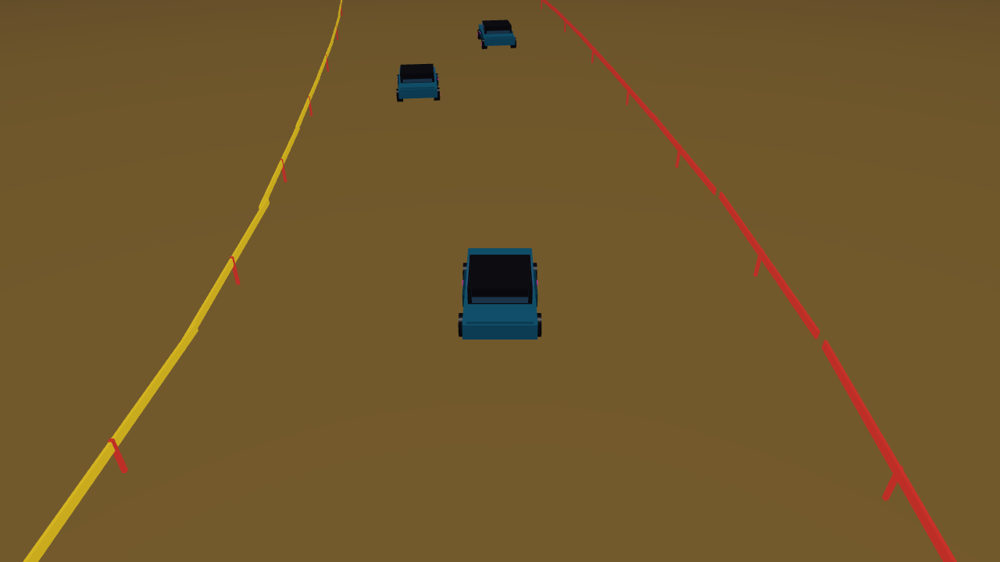

Asfalto e bordas amostrados a cada 2 unidades, agrupados em trechos de até 112 unidades. Mantidos materiais, largura, marcações, percurso físico, voltas e pré-largada das pistas abertas. Praia sem alteração.
Teste de renderização estática em software (SwiftShader), não um benchmark da GPU física nem da corrida completa. Chrome 157.0.8103.52; Babylon 9.35.0; 1280 × 720; escala 1; câmera fixa; semente determinística reiniciada antes do cenário; 4 s de aquecimento + 3 amostras de 4 s por pista. Mesmo navegador, engine e enquadramento nos dois lados. Tempos de CPU medem a chamada scene.render(), não o tempo exclusivo de GPU.
Medianas das três amostras. As contagens de meshes são só da estrada; draw calls são de toda a cena visível. P95 representa a duração dos quadros mais lentos (menor é melhor). FPS depende de carga externa e de renderização por software: não interpretar diferenças pequenas como ganho ou regressão comprovados.
| Pista | Meshes estrada | Triângulos estrada | Draw calls | FPS | CPU P50 (ms) | Quadro P95 (ms) |
|---|---|---|---|---|---|---|
| Neon Circuit | 572 → 27 | 5434 → 10752 | 123.0 → 86.0 | 41.9 → 27.7 | 2.8 → 1.6 | 26.7 → 40.1 |
| Sunset Rush | 648 → 33 | 6156 → 12168 | 125.0 → 82.0 | 26.9 → 25.5 | 5.5 → 2.9 | 40.0 → 44.6 |
| Tunnel Rush | 596 → 30 | 5662 → 11220 | 126.0 → 85.0 | 21.4 → 24.4 | 6.3 → 1.9 | 51.8 → 47.5 |
| Praia Rush (controle) | 0 → 0 | 0 → 0 | 110.0 → 110.0 | 24.1 → 27.5 | 4.7 → 2.9 | 46.0 → 40.1 |
| Natal Race | 1016 → 48 | 9652 → 19068 | 143.0 → 94.0 | 26.3 → 24.8 | 6.5 → 6.4 | 41.4 → 43.2 |
| Neon Oval | 508 → 24 | 4826 → 9480 | 226.0 → 176.0 | 20.0 → 21.5 | 10.9 → 5.2 | 53.4 → 50.8 |
A primeira referência foi coletada antes da alteração. Após identificar oscilação no início e consumo da semente aleatória pela engine, repetimos a versão original preservada e a nova em sequência. Os arquivos initial-before-metrics.json, exploratory-after-metrics.json , pilot-metrics.json e pre-fix-after-metrics.json preservam as passagens anteriores, excluídas desta tabela. Os dados válidos estão em antes e depois.
Validação geométrica: emendas, fechamento do oval, normais, percurso imutável e descarte de meshes. As imagens abaixo permitem verificar a remoção dos degraus das bordas. A vista superior do oval desliga a neblina somente para inspecionar a emenda; as medições mantêm a neblina original. As imagens são lidas diretamente do canvas após renderizar. A subdivisão aumenta os triângulos para suavizar a pista, enquanto o agrupamento reduz objetos e chamadas de desenho.
Esquerda: antes. Direita: depois. Arraste a divisão para comparar.
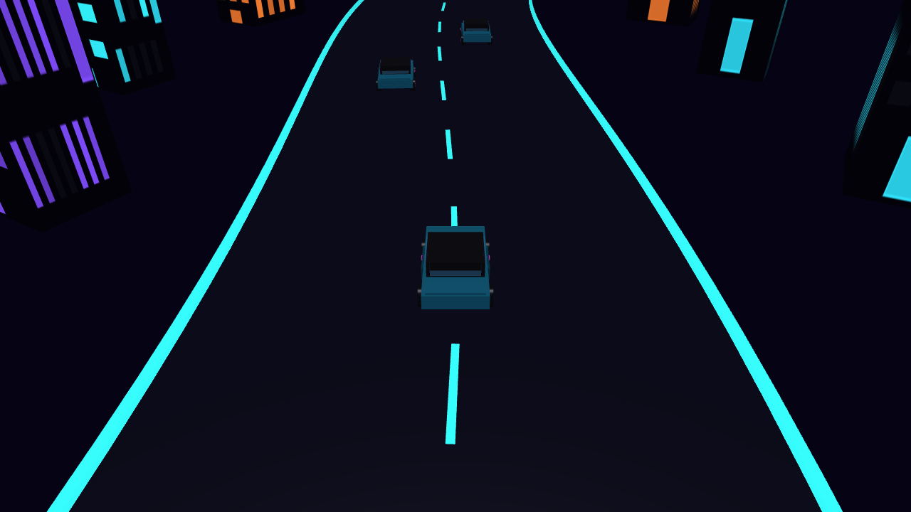
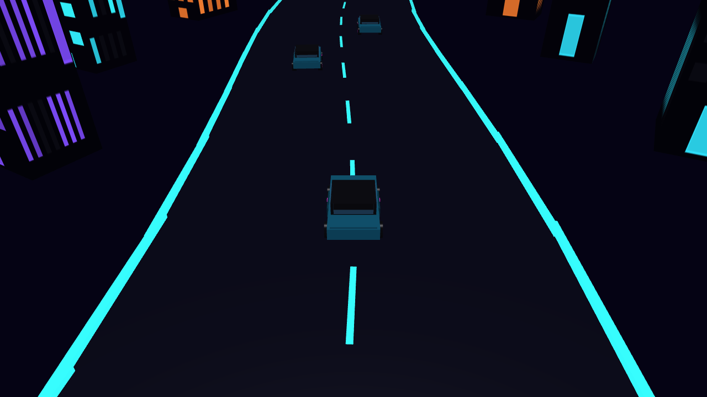
Esquerda: antes. Direita: depois. Arraste a divisão para comparar.
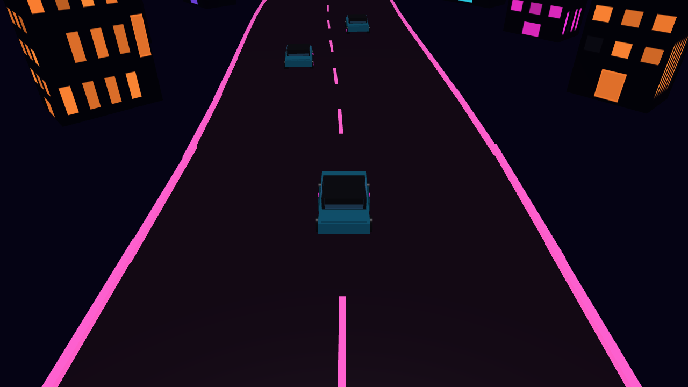
Esquerda: antes. Direita: depois. Arraste a divisão para comparar.
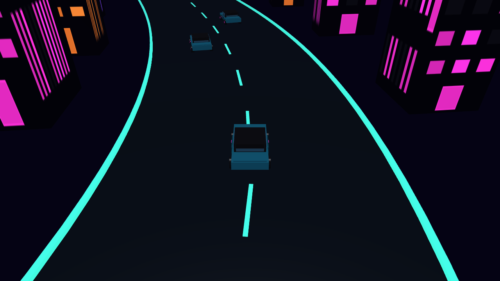
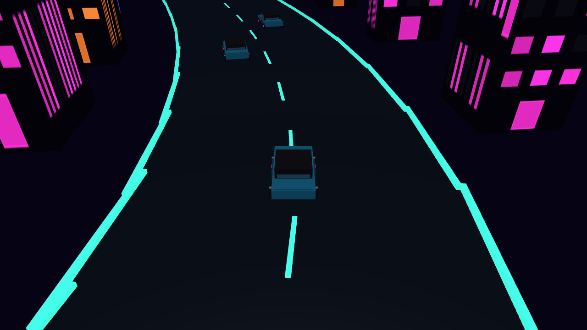
Esquerda: antes. Direita: depois. Arraste a divisão para comparar.

Esquerda: antes. Direita: depois. Arraste a divisão para comparar.
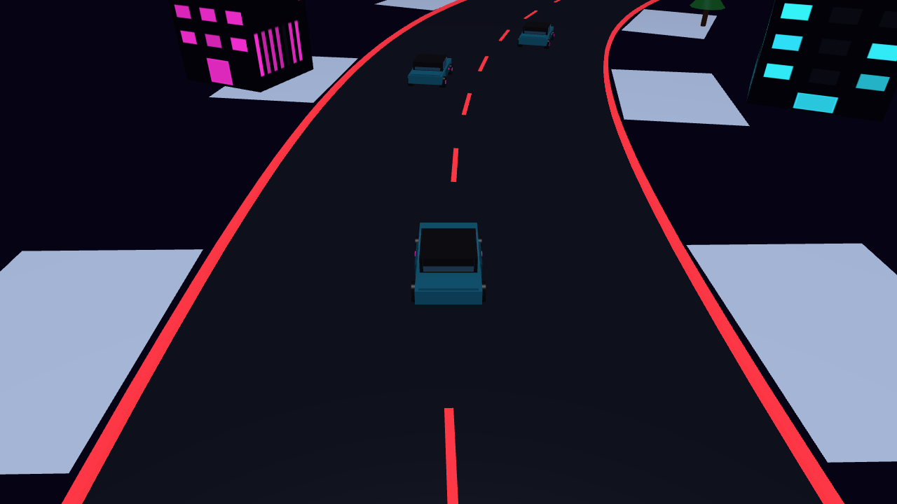
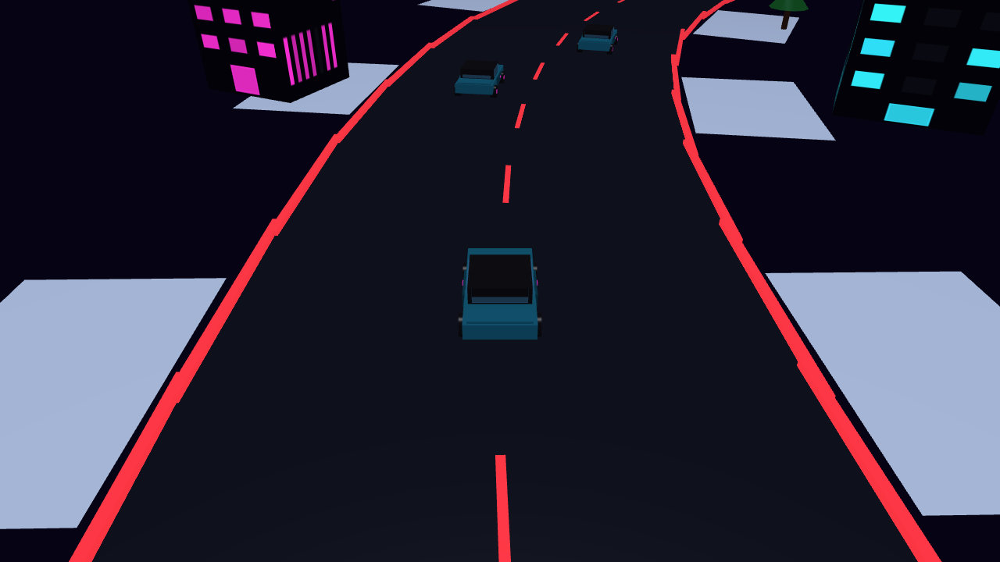
Esquerda: antes. Direita: depois. Arraste a divisão para comparar.
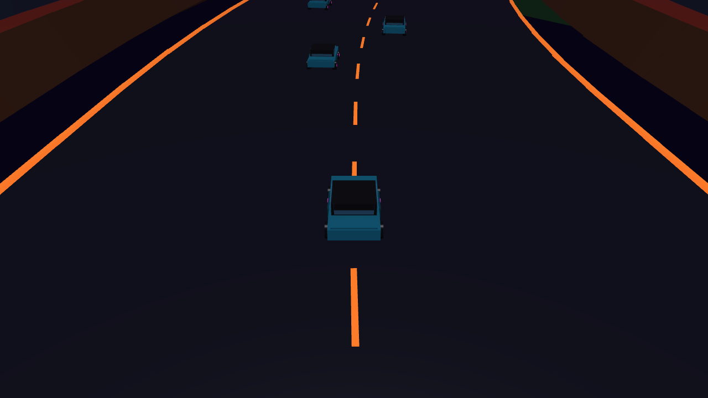
Esquerda: antes. Direita: depois. Arraste a divisão para comparar.
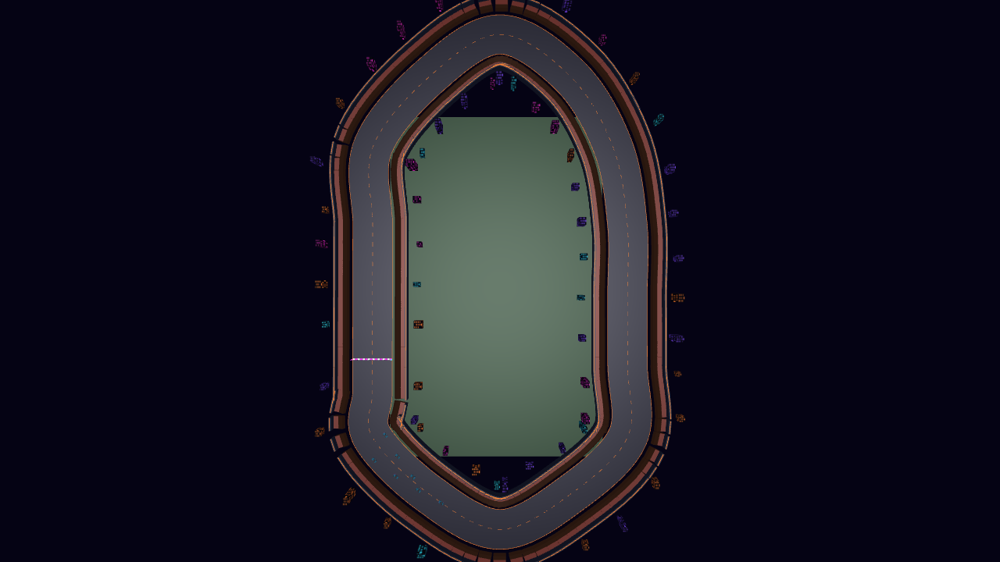
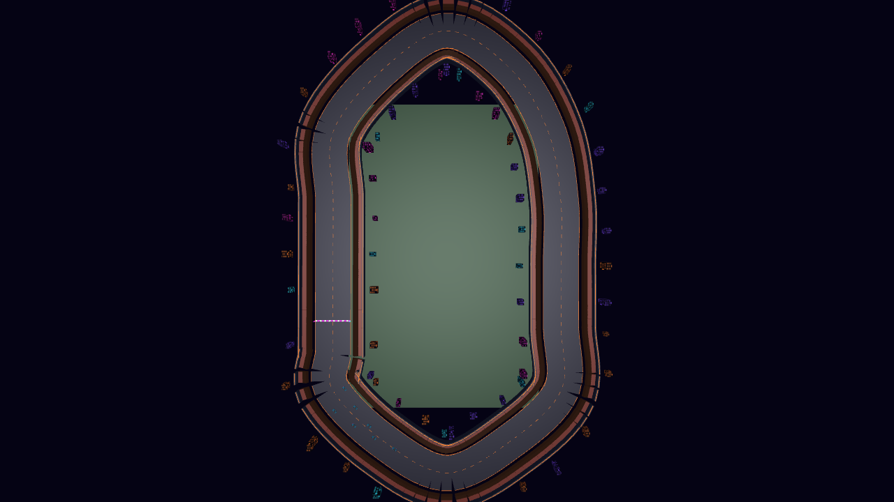